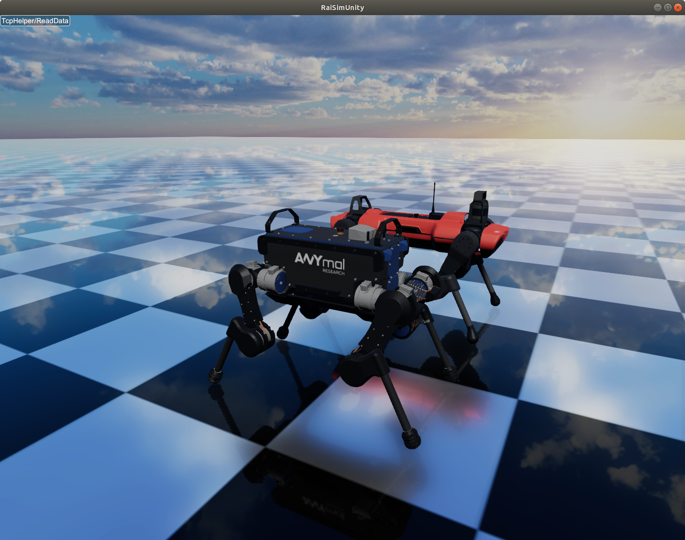

Articulated Systems¶
{kind=link}
ANYmal robots (B and C versions) simulated in RaiSim.
Introduction¶
An articulated Systems is a system of multiple bodies connected through joints. There are two types of articulated systems: Kinematic trees and closed-loop systems. Kinematic trees do not contain a loop (a body always has only one parent joint). Consequently, the number of joints is equal to the number of bodies (for floating systems, we assign a floating joint on the root body). RaiSim can only simulate kinematic trees.
Since all bodies have one joint, a body index is always the same as its parent joint’s index. A body refers to a rigid body which is composed of one or more links. All links within a body are connected to each other by a fixed joint.
Creating an instance¶
Just like any other object, an articulated system is created by the world instance using addArticulatedSystem method.
There are three ways to specify the system.
by providing the path to the URDF file (the most recommneded way)
by providing
std::stringof the URDF text (can be useful when working with Xacro)by providing a
raisim::Childinstance. It is an advanced method and not recommnded to beginners.
Note that option 1 and 2 use the same method. You can provide either the path string or the contents string and the class will identify which one is provided.
State Representation¶
The state of an articulated system can be represented by a generalized state \(\boldsymbol{S}\), which is composed of a generalized coordinate \(\boldsymbol{q}\) and a generalized velocity \(\boldsymbol{u}\). Since we are not constraining their parameterization, in general,
A generalized coordinate fully represents the configuration of the articulated system and a generalized velocity fully represents the velocity state of the articulated system.
Every joint has a corresponding generalized coordinate and generalized velocity.
A concatenation of all joint generalized coordinates and velocities are the generalized coordinates and velocities of the articulated system, respectively.
The order of this concatenation is called joint order.
The joint order is determined by the order the joint appears in the URDF unless otherwise it is explicitly given at the instance construction time.
The joint order can be accessed through getMovableJointNames().
Note the keyword “movable”.
The fixed joints contribute to neither the generalized coordinate nor the generalized velocity.
Only movable joints do (with one exception metioned below).
The joint order starts with the root body which is the first body of the articulated system.
For floating-base systems, the root body is the floating base.
For fixed-base systems, the root body is the one rigidly attached to the wolrd.
Even though the fixed base cannot move physically, users can move them using setBaseOrientation and setBasePosition.
So getMovableJointNames() method will return the fixed base name and the fixed base joint is a part of the joint order.
The following example illustrates how the generalized coordinates and velocities are defined.
To set the state of the system, the following methods can be used
setGeneralizedCoordinatesetGeneralizedVelocitysetState
To obtain the state of the system, the following methods can be used
getGeneralizedCoordinategetGeneralizedVelocitygetState
The dimensions of each vector can be obtained respectively by
getGeneralizedCoordinateDimgetDOForgetGeneralizedVelocityDim.
These two methods are identical
Joints¶
Here are the available joints in RaiSim.
Fixed |
Floating |
Revolute |
Prismatic |
Spherical |
|
|---|---|---|---|---|---|
\(|\boldsymbol{u}|\) |
0 |
6 |
1 |
1 |
3 |
\(|\boldsymbol{q}|\) |
0 |
7 |
1 |
1 |
4 |
Velocity |
\(m/s\), \(rad/s\) |
\(rad/s\) |
\(m/s\) |
\(rad/s\) |
|
Position |
\(m\), \(rad\) |
\(rad\) |
\(m\) |
\(rad\) |
|
Force |
\(N\), \(Nm\) |
\(Nm\) |
\(N\) |
\(Nm\) |
The generalized coordinates/velocities of a joint are expressed in the joint frame and with respect to the parent body. Joint frame is the frame attached to every joint and fixed to the parent body. Parent body is the one closer to the root body among the two bodies connected via the joint. Note that the angular velocity of a floating base is also expressed in the parent frame (which is the world frame). Other libraries (e.g., RBLD) might have a different convention and a special care has to be taken in conversions.
URDF convention¶
RaiSim uses a modified URDF protocol to define an articulated system. URDF files following the original convention can be read in RaiSim. However, since RaiSim offers more functionalities, a RaiSim URDF might not be read by other libraries following the original URDF convention.
The modifications are as follows:
Capsule geom is available for both collision objects and visual objects (with the keyword “capsule”). The geom is defined by “height” and “radius” keyword. The height represents the distance between the two center points of the spheres.
A <joint>/<dynamics> tag can have three more attributes: rotor_inertia, spring_mount and stiffness.
Here is an example joint with the raisim tags
<joint name="link1Tolink2" type="spherical">
<parent link="link1"/>
<child link="link2"/>
<origin xyz="0 0 -0.24"/>
<axis xyz="0 1 0"/>
<dynamics rotor_inertia="0.0001" spring_mount="0.70710678118 0 0.70710678118 0" stiffness="500.0" damping="3."/>
</joint>
Rotor_inertia in Raisim approximately simulates the rotor inertia of the motor (but missing the resulting gyroscopic effect, which is often neglegible).
It is added to the diagonal elements of the mass matrix.
It is common way to include the inertial effect of the rotor.
You can also override it in C++ using setRotorInertia().
Since RaiSim does not know the gear ratio, you have to multiply the rotor inertia by the square of the gear ratio yourself.
In other words, the value is the reflected rotor inertia observed at the joint.
And two preprocessor features (that are also available in the raisim world configuration file) are available for the URDF template.
You can specify a variable in a form of “@@Robot_Height”. The value of this variable can be specified at the run timeusing ‘’std::unordered_map’’ and the corresponding factory method in ‘’raisim::World::.
You can specify an equation instead of a variable. For example, {@@Robot_Height*@@Robot_Width*2}.
The preprocessor example can be found in examples/src/server/trackedRobotAndTemplatedURDF.cpp and the corresponding URDF template in rsc/templatedTrackedRobot/trackedTemplate.urdf.
In RaiSim, each body of an articulated system has a set of collision bodies and visual objects. Collision bodies contain a collision object of one of the following shapes: mesh, sphere, box, cylinder, capsule. Visual objects just store specifications for visualization and the actual visualzation happens in a visualizer (e.g., raisimOgre) For details, check the URDF protocol.
Kinematics¶
Frames¶
A position and velocity of a specific point on a body of an articulated system can be obtained by attaching a frame. Frames are rigidly attached to a body of the system and has a constant position and orientation (w.r.t. parent frame). It is the most recommended way to get kinematics information of a point of an articulated system in RaiSim.
All joints have a frame attached and their names are the same as the joint name. To create a custom frame, a fixed frame can be defined at the point of the interest. A dummy link with zero inertia and zero mass must be added on one side of the fixed joint to complete the kinematic tree.
A frame can be locally stored as an index in the user code. For e.g.,
#include “raisim/World.hpp”
int main() {
raisim::World world;
auto anymal = world.addArticulatedSystem(PATH_TO_URDF);
auto footFrameIndex = anymal->getFrameIdxByName("foot_joint"); // the URDF has a joint named "foot_joint"
raisim::Vec<3> footPosition, footVelocity, footAngularVelocity;
raisim::Mat<3,3> footOrientation;
anymal->getFramePosition(footFrameIndex, footPosition);
anymal->getFrameOrientation(footFrameIndex, footOrientation);
anymal->getFrameVelocity(footFrameIndex, footVelocity);
anymal->getFrameAngularVelocity(footFrameIndex, footAngularVelocity);
}
You can also store a Frame reference.
For e.g., you can replace getFrameIdxByName by getFrameByName in the above example.
In this way, you can access the internal variables and even modify them.
Modifying the frames do not affect the joints.
Frames are instantiated during initialization of the articulated system instance and affect neither kinematics nor dynamics of the system.
Jacobians¶
Jacobians of a point in RaiSim satisfy the following equation:
where \(\boldsymbol{v}\) represents the linear velocity of the associated point. If a rotational Jacobian is used, the right-hand side changes to a rotational velocity expressed in the world frame.
To get the Jacobians associated with the linear velocity, the following methods are used
getSparseJacobiangetDenseJacobian– this method only fills non-zero values. The matrix should be initialized to a zero matrix of an appropriate size.
To get the rotational Jacobians, the following methods are used
getSparseRotationalJacobiangetDenseRotationalJacobian– this method only fills non-zero values. The matrix should be initialized to a zero matrix of an appropriate size.
The main Jacobian class in RaiSim is raisim::SparseJacobian.
RaiSim uses only sparse Jacobians as it is more memory-friendly.
Note that only the joints between the child body and the root body affect the motion of the point.
The class raisim::SparseJacobian has a member idx which stores the indicies of columns whose values are non-zero.
The member v stores the Jacobian except the zero columns.
In other words, ith column of v corresponds to idx[i] generalized velocity dimension.
Dynamics¶
All force and torque acting on the system can be represented as a single vector in the generalized velocity space. This representation is called generalized force \(\boldsymbol{\tau}\). Just like in a Cartesian coordiate (i.e., x, y, z axes), the power exerted by an articulated system is computed as a dot product of generalized force and generalized velocity (i.e., \(\boldsymbol{u}\cdot\boldsymbol{\tau}\)).
We can also combine the mass and inertia of the whole articulated system and represent them in a single matrix. This matrix is called mass matrix or inertia matrix and denoted by \(\boldsymbol{M}\). A mass matrix represents how much the articulated system resists change in generalized velocities. Naively speaking, a large mass matrix means that the articulated system experiences a low velocity change for a given generalized force.
The total kinetic energy of the system is computed as \(\frac{1}{2}\boldsymbol{u}^T\boldsymbol{M}\boldsymbol{u}\).
This quantity can be obtained by getKineticEnergy().
The total potential energy due to the gravity is a sum of \(mgh\) for all bodies.
This quantity can be obtained by getPotentialEnergy().
Note that the gravity has to be specified since only the world has the gravity vector.
The equation of motion of an articulated system is shown below:
Here \(\boldsymbol{h}\) is called a non-linear term. There are three sources of force that contributes to the non-linear term: gravity, coriolis, and centrifugal force. It is rarely useful to compute the gravity contribution to the nonlinear term alone. However, if it is needed, the easiest way is to make the same robot in another world with zero velocity. If the generalized velocity is zero, the coriolis and centrifugal contributions are zero.
The following methods are used to obtain dynamic quantities
getMassMatrix()getNonlinearities()getInverseMassMatrix()
PD Controller¶
When naively implemented, a PD controller can often make a robot unstable. However, this is often not so bad for robotics since this instability is also present in the real system (discrete-time control system).
For other applications like animation and graphics, it is often desirable to have a stable PD controller when a user wants to keep the time step small. Therefore, this PD controller exploits a more stable integration scheme and can have much smaller time step than a naive implementation.
This PD controller does not respect the actuation limits of the robot. It uses an implicit integration scheme and we do not even compute the actual torque that is applied to the joints.
To use this PD controller, you have to set the desirable control gains first
Eigen::VectorXd pGain(robot->getDOF()), dGain(robot->getDOF());
pGain<< ...; // set your proportional gain values here
dGain<< ...; // set your differential gain values here
robot->setPdGains(pGain, dGain);
Note that the dimension of the pGain vector is the same as that of the generalized velocity NOT that of the coordinate.
Finally, the target position and the velocity can set as below
Eigen::VectorXd pTarget(robot->getGeneralizedCoordinateDim()), vTarget(robot->getDOF());
pTarget<< ...; // set your position target
vTarget<< ...; // set your velocity target
robot->setPdTarget(pTarget, vTarget);
Here, the dimension of the pTarget vector is the same as that of the generalized coordinate NOT that of the velocity. This is confusing and might seem inconsistent. However, this is a valid convention. The only reason that the two dimensions differ is quaternions. The quaternion target is represented by a quaternion whereas the virtual spring stiffness between the two orientations can be represented by a 3D vector, which is composed of motions in each angular velocity components.
A feedforward force term can be added by setGeneralizedForce() if desired.
This term is set to zero by default.
Note that this value is stored in the class instance and does not change unless the user specifies it so.
If this feedforward force should be applied for a single time step, it should be set to zero in the subsequent control loop (after integrate() call of the world).
The theory of the implemented PD controller can be found in chapter 1.2 of this article. This document is only for advanced users and it is not necessary to use RaiSim.
Integration Steps¶
Integration of an articulated systems is performed in two stages: integrate1 and integrate2
The following steps are performed in integrate1
If the time step is changed, update the damping of the mass matrix (which reflects effective inertial increase due to springs, dampers and PD gains)
Update positions of the collision bodies
Detect collisions (called by the world instance)
The world assigns contacts on each object and computes the contact normal
Compute the mass matrix, nonlinear term and inverse inertia matrix
Compute (Sparse) Jacobians of contacts
After this step, all kinematic/dynamic proerpties are computed at this stage.
Users can access them if they are necessary for the controller.
Next, integrate2 computes the rest of the simulation.
Compute contact Properties
Compute PD controller (if used), add it to the feedforward force and bound it by the limits
Compute generalized forces due to springs and external forces/torques
Contact solver (called by the world instance)
Integrate the velocity
Integrate the position (in a semi-implicit way)
Get and Modify Robot Description in code¶
RaiSim allows users modify most of the robot parameters freely in code. This allows users to create randomized robot model, which might be useful for AI applications (i.e., dynamic randomization). Note that a random model might be kinematically and dynamically unrealistic. For example, joints can be locked by collision bodies. In such cases, simulation cannot be performed reliably and it is advised to carefully check randomly generated robot models.
Here is a list of modifiable kinematic/dynamic parameters.
Joint Position (relative to the parent joint) Expressed in the Parent Frame
getJointPos_P method returns (a non-const reference to) a std::vector of position vectors from the parent joint to the child joint expressed in the respective parent joint frames.
This should be changed with care since it can result in unrealistic collision geometry.
This method does not change the position of the end-effector with respect to its parent as the position of the last link is defined by the collision body position, not by the joint position.
The elements are ordered by the joint indicies.
Joint Axis in the Parent Frame
getJointAxis_P method returns (a non-const reference to) a std::vector of joint axes expressed in the respective parent joint frame.
This method should also be changed with care.
The elements are ordered by the joint indicies.
Mass of the Links
getMass method returns (a non-const reference to) a std::vector of link masses.
IMPORTANT! You must call :code:`updateMassInfo` after changing mass values.
The elements are ordered by the body indicies (which is the same as the joint indicies in RaiSim).
Center of Mass Position
getBodyCOM_B method returns (a non-const reference to) a std::vector of the COM of the bodies.
The elements are ordered by the body indices.
Link Inertia
getInertia method returns (a non-const reference to) a std::vector of link inertia.
The elements are ordered by the body indicies.
Collision Bodies
getCollisionBodies method returns (a non-const reference to) a std::vector of the collision bodies.
This vector contains all collision bodies associated with the articulated system.
getCollisionBody method returns a specific collision body instead.
All collision bodies are named “LINK_NAME” + “/INDEX”.
For example, the 2nd collision body of a link named “FOOT” is named “FOOT/1” (1 because the index starts from 0).
The collision bodies is a class that contains position/orientation offset from the parent joint frame, name, parent body index, and ODE collision pointer (dGeomID, retrieved using getCollisionObject).
The collision geom can be modified using ODE methods (ODE manual).
Users can also modify the material of the collision body.
This material affects the contact dynamics.
Apply External Forces/torques¶
The following two methods are used to apply external force and torque respectively
setExternalForcesetExternalTorque
Collision¶
Apart from the collision mask and collision group set in the world, users can also disable a collision between a certain pair of the links with ignoreCollisionBetween.
Types of Indicies¶
ArticulatedSystem class contains multiple types of indicies. To query a specific quantity, you have to provide an index of the right type. Here are the types of indicies in Articulated Systems
Body/Joint Index: All fixed bodies are combined to a single movable body. Each movable body has a unique body index. Because there is a movable joint associated with a movable body, there is a 1-to-1 mapping between the joints and the bodies and they share the same index. For a fixed-base system, the first body rigidly fixed to the world is body-0. For a floating-base system, the floating base is body-0.
Generalized Velocity (DOF) Index: All joints are mapped to a specific set of generalized velocity indicies.
Generalized Coordinate Index:
Frame Index:
Conversions Between Indicies¶
A body index to a generalized velocity index:
ArticulatedSystem::getMappingFromBodyIndexToGeneralizedVelocityIndex()A body index to a generalized coordinate index:
ArticulatedSystem::getMappingFromBodyIndexToGeneralizedCoordinateIndex()
API¶
-
class raisim::ArticulatedSystem : public raisim::Object¶
Public Functions
-
inline const raisim::VecDyn &getGeneralizedCoordinate() const¶
- Returns
generalized coordinate of the system
-
inline const raisim::VecDyn &getGeneralizedVelocity() const¶
- Returns
generalized velocity of the system
-
void getBaseOrientation(raisim::Vec<4> &quaternion) const¶
- Parameters
quaternion – [out] orientation of base
-
inline void getBaseOrientation(raisim::Mat<3, 3> &rotataionMatrix) const¶
- Parameters
rotataionMatrix – [out] orientation of base
-
inline const raisim::Mat<3, 3> &getBaseOrientation() const¶
- Returns
orientation of base
-
inline void getBasePosition(raisim::Vec<3> &position) const¶
- Parameters
position – [out] position of base
-
inline raisim::Vec<3> getBasePosition() const¶
- Returns
position of base
-
void updateKinematics()¶
unnecessary to call this function if you are simulating your system. integrate1 calls this function Call this function if you want to get kinematic properties but you don’t want to integrate.
-
inline void setGeneralizedCoordinate(const Eigen::VectorXd &jointState)¶
set gc of each joint in order
- Parameters
jointState – [in] generalized coordinate
-
inline void setGeneralizedCoordinate(const raisim::VecDyn &jointState)¶
set gc of each joint in order
- Parameters
jointState – [in] generalized coordinate
-
inline void setGeneralizedVelocity(const Eigen::VectorXd &jointVel)¶
set the generalized velocity
- Parameters
jointVel – [in] the generalized velocity
-
inline void setGeneralizedVelocity(const raisim::VecDyn &jointVel)¶
set the generalized velocity
- Parameters
jointVel – [in] the generalized velocity
-
void setGeneralizedCoordinate(std::initializer_list<double> jointState)¶
set the generalized coordinsate of each joint in order.
- Parameters
jointState – [in] the generalized coordinate
-
void setGeneralizedVelocity(std::initializer_list<double> jointVel)¶
set the generalized velocity of each joint in order
- Parameters
jointVel – [in] the generalized velocity
-
void setGeneralizedForce(std::initializer_list<double> tau)¶
This is feedforward generalized force. In the PD control mode, this differs from the actual generalizedForce the dimension should be the same as dof.
- Parameters
tau – [in] the generalized force. If the built-in PD controller is active, this force is added to the generalized force from the PD controller
-
inline void setGeneralizedForce(const raisim::VecDyn &tau)¶
This is feedforward generalized force. In the PD control mode, this differs from the actual generalizedForce the dimension should be the same as dof.
- Parameters
tau – [in] the generalized force. If the built-in PD controller is active, this force is added to the generalized force from the PD controller
-
inline void setGeneralizedForce(const Eigen::VectorXd &tau)¶
This is feedforward generalized force. In the PD control mode, this differs from the actual generalizedForce the dimension should be the same as dof.
- Parameters
tau – [in] the generalized force. If the built-in PD controller is active, this force is added to the generalized force from the PD controller
-
inline void getState(Eigen::VectorXd &genco, Eigen::VectorXd &genvel) const¶
get both the generalized coordinate and the generalized velocity
- Parameters
genco – [out] the generalized coordinate
genvel – [out] the generalized velocity
-
inline void getState(VecDyn &genco, VecDyn &genvel) const¶
get both the generalized coordinate and the generalized velocity
- Parameters
genco – [out] the generalized coordinate
genvel – [out] the generalized velocity
-
inline void setState(const Eigen::VectorXd &genco, const Eigen::VectorXd &genvel)¶
set both the generalized coordinate and the generalized velocity. This updates the kinematics and removes previously computed contact points
- Parameters
genco – [in] the generalized coordinate
genvel – [in] the generalized velocity
-
inline VecDyn getGeneralizedForce() const¶
Generalized user-set gen force (using setGeneralizedForce()). This method a small error when the built-in PD controller is used. The PD controller is implicit (using a continuous, linear model) so we cannot get the true gen force. But if you set the time step small enough, the difference is negligible.
- Returns
the generalized force
-
inline const VecDyn &getFeedForwardGeneralizedForce() const¶
get the feedfoward generalized force (which is set by the user)
- Returns
the feedforward generalized force
-
inline const MatDyn &getMassMatrix()¶
get the mass matrix
- Returns
the mass matrix. Check Object/ArticulatedSystem section in the manual
-
inline const VecDyn &getNonlinearities(const Vec<3> &gravity)¶
get the coriolis and the gravitational term
- Parameters
gravity – [in] gravitational acceleration. You should get this value from the world.getGravity();
- Returns
the coriolis and the gravitational term. Check Object/ArticulatedSystem section in the manual
-
inline const MatDyn &getInverseMassMatrix()¶
get the inverse mass matrix. Note that this is actually damped inverse. It contains the effect of damping and the spring effects due to the implicit integration. YOU MUST CALL getMassMatrix FIRST BEFORE CALLING THIS METHOD.
- Returns
the inverse mass matrix. Check Object/ArticulatedSystem section in the manual
-
inline const std::vector<raisim::Vec<3>> &getCompositeCOM() const¶
get the center of mass of a composite body containing body i and all its children. if you want the COM of the whole robot, just take the first element This only works if you have called getMassMatrix() with the current state
- Returns
the center of mass of the composite body
-
inline Vec<3> getCOM() const¶
get the center of mass of the whole system
- Returns
the center of mass of the system
-
inline const std::vector<raisim::Mat<3, 3>> &getCompositeInertia() const¶
get the current composite inertia of a composite body containing body i and all its children
- Returns
the inertia of the composite system
-
inline const std::vector<double> &getCompositeMass() const¶
get the current composite mass of a composite body containing body i and all its children
- Returns
get the composite mass
-
inline Vec<3> getLinearMomentum() const¶
linear momentum of the whole system
- Returns
momentum
-
inline const VecDyn &getGeneralizedMomentum() const¶
returns the generalized momentum which is M * u It is already computed in “integrate1()” so you don’t have to compute again.
- Returns
the generalized momentum
-
double getEnergy(const Vec<3> &gravity)¶
- Parameters
gravity – [in] gravitational acceleration
- Returns
the sum of potential/kinetic energy given the gravitational acceleration
-
double getKineticEnergy()¶
- Returns
the kinetic energy.
-
double getPotentialEnergy(const Vec<3> &gravity) const¶
- Parameters
gravity – [in] gravitational acceleration
- Returns
the potential energy (relative to zero height) given the gravity vector
-
void getAngularMomentum(const Vec<3> &referencePoint, Vec<3> &angularMomentum) const¶
- Parameters
referencePoint – [in] the reference point about which the angular momentum is computed
angularMomentum – [in] angular momentum about the reference point
-
void printOutBodyNamesInOrder() const¶
bodies here means moving bodies. Fixed bodies are optimized out
-
void printOutMovableJointNamesInOrder() const¶
print out movable joint names in order
-
void printOutFrameNamesInOrder() const¶
frames are attached to every joint coordinate
-
inline const std::vector<std::string> &getMovableJointNames() const¶
getMovableJointNames. Note! the order doesn’t correspond to dof since there are joints with multiple dof’s
- Returns
movable joint names in the joint order.
-
virtual void getPosition(size_t bodyIdx, const Vec<3> &point_B, Vec<3> &point_W) const final¶
- Parameters
bodyIdx – [in] The body which contains the point, can be retrieved by getBodyIdx()
point_B – [in] The position of the point in the body frame
point_W – [out] The position of the point in the world frame
- Returns
position in the world frame of a point defined in a joint frame
-
inline CoordinateFrame &getFrameByName(const std::string &nm)¶
Refer to Object/ArticulatedSystem/Kinematics/Frame in the manual for details
- Parameters
nm – [in] name of the frame
- Returns
the coordinate frame of the given name
-
inline CoordinateFrame &getFrameByIdx(size_t idx)¶
Refer to Object/ArticulatedSystem/Kinematics/Frame in the manual for details
- Parameters
idx – [in] index of the frame
- Returns
the coordinate frame of the given index
-
size_t getFrameIdxByName(const std::string &nm) const¶
Refer to Object/ArticulatedSystem/Kinematics/Frame in the manual for details The frame can be retrieved as as->getFrames[index]. This way is more efficient than above methods that use the frame name
- Parameters
nm – [in] name of the frame
- Returns
the index of the coordinate frame of the given index. Returns size_t(-1) if it doesn’t exist
-
inline std::vector<CoordinateFrame> &getFrames()¶
Refer to Object/ArticulatedSystem/Kinematics/Frame in the manual for details The frame can be retrieved as as->getFrames[index]. This way is more efficient than above methods that use the frame name
- Returns
a vector of the coordinate frames
-
void getFramePosition(size_t frameId, Vec<3> &point_W) const¶
- Parameters
frameId – [in] the frame id which can be obtained by getFrameIdxByName()
point_W – [out] the position of the frame expressed in the world frame
-
void getFrameOrientation(size_t frameId, Mat<3, 3> &orientation_W) const¶
- Parameters
frameId – [in] the frame id which can be obtained by getFrameIdxByName()
orientation_W – [out] the position of the frame relative to the world frame
-
void getFrameVelocity(size_t frameId, Vec<3> &vel_W) const¶
- Parameters
frameId – [in] the frame id which can be obtained by getFrameIdxByName()
vel_W – [out] the linear velocity of the frame expressed in the world frame
-
void getFrameAngularVelocity(size_t frameId, Vec<3> &angVel_W) const¶
- Parameters
frameId – [in] the frame id which can be obtained by getFrameIdxByName()
angVel_W – [out] the angular velocity of the frame expressed in the world frame
-
inline void getFramePosition(const std::string &frameName, Vec<3> &point_W) const¶
- Parameters
frameName – [in] the frame name (defined in the urdf)
point_W – [out] the position of the frame expressed in the world frame
-
inline void getFrameOrientation(const std::string &frameName, Mat<3, 3> &orientation_W) const¶
- Parameters
frameName – [in] the frame name (defined in the urdf)
orientation_W – [out] the orientation of the frame relative to the world frame
-
inline void getFrameVelocity(const std::string &frameName, Vec<3> &vel_W) const¶
- Parameters
frameName – [in] the frame name (defined in the urdf)
vel_W – [out] the linear velocity of the frame expressed in the world frame
-
inline void getFrameAngularVelocity(const std::string &frameName, Vec<3> &angVel_W) const¶
- Parameters
frameName – [in] the frame name (defined in the urdf)
angVel_W – [out] the angular velocity of the frame relative to the world frame
-
void getFramePosition(const CoordinateFrame &frame, Vec<3> &point_W) const¶
- Parameters
frame – [in] custom frame defined by the user
point_W – [out] the position of the frame relative to the world frame
-
void getFrameOrientation(const CoordinateFrame &frame, Mat<3, 3> &orientation_W) const¶
- Parameters
frame – [in] custom frame defined by the user
orientation_W – [out] the orientation of the frame relative to the world frame
-
void getFrameVelocity(const CoordinateFrame &frame, Vec<3> &vel_W) const¶
- Parameters
frame – [in] custom frame defined by the user
vel_W – [out] the linear velocity of the frame expressed to the world frame
-
void getFrameAngularVelocity(const CoordinateFrame &frame, Vec<3> &angVel_W) const¶
- Parameters
frame – [in] custom frame defined by the user
angVel_W – [out] the angular velocity of the frame expressed to the world frame
-
inline virtual void getPosition(size_t bodyIdx, Vec<3> &pos_w) const final¶
- Parameters
bodyIdx – [in] the body index. Note that body index and the joint index are the same because every body has one parent joint. It can be retrieved by getBodyIdx()
pos_w – [out] the position of the joint (after its own joint transformation)
-
void getPositionInBodyCoordinate(size_t bodyIdx, const Vec<3> &pos_W, Vec<3> &pos_B)¶
- Parameters
bodyIdx – [in] the body index. Note that body index and the joint index are the same because every body has one parent joint. It can be retrieved by getBodyIdx()
pos_W – [in] the position in the world coordinate. This position does not have to be physically on the body.
pos_B – [out] the position in the body frame
-
inline virtual void getOrientation(size_t bodyIdx, Mat<3, 3> &rot) const final¶
- Parameters
bodyIdx – [in] the body index. Note that body index and the joint index are the same because every body has one parent joint. It can be retrieved by getBodyIdx()
rot – [out] the orientation of the joint (after its own joint transformation)
-
inline virtual void getVelocity(size_t bodyIdx, Vec<3> &vel_w) const final¶
- Parameters
bodyIdx – [in] the body index. Note that body index and the joint index are the same because every body has one parent joint. It can be retrieved by getBodyIdx()
vel_w – [out] the linear velocity of the joint (after its own joint transformation)
-
inline void getAngularVelocity(size_t bodyIdx, Vec<3> &angVel_w) const¶
- Parameters
bodyIdx – [in] the body index. Note that body index and the joint index are the same because every body has one parent joint. It can be retrieved by getBodyIdx()
angVel_w – [out] the angular velocity of the joint (after its own joint transformation)
-
void getSparseJacobian(size_t bodyIdx, const Vec<3> &point_W, SparseJacobian &jaco) const¶
- Parameters
bodyIdx – [in] the body index. Note that body index and the joint index are the same because every body has one parent joint. It can be retrieved by getBodyIdx()
point_W – [in] the point expressed in the world frame. If you want to use a point expressed in the body frame, use getDenseFrameJacobian()
jaco – [out] the positional Jacobian. v = J * u. v is the linear velocity expressed in the world frame and u is the generalized velocity
-
void getSparseRotationalJacobian(size_t bodyIdx, SparseJacobian &jaco) const¶
- Parameters
bodyIdx – [in] the body index. Note that body index and the joint index are the same because every body has one parent joint. It can be retrieved by getBodyIdx()
jaco – [out] the rotational Jacobian. omega = J * u. omgea is the angular velocity expressed in the world frame and u is the generalized velocity
-
inline void getDenseJacobian(size_t bodyIdx, const Vec<3> &point_W, Eigen::MatrixXd &jaco) const¶
This method only fills out non-zero elements. Make sure that the jaco is setZero() once in the initialization!
- Parameters
bodyIdx – [in] the body index. Note that body index and the joint index are the same because every body has one parent joint
point_W – [in] the point expressed in the world frame. If you want to use a point expressed in the body frame, use getDenseFrameJacobian()
jaco – [out] the dense positional Jacobian
-
inline void getDenseRotationalJacobian(size_t bodyIdx, Eigen::MatrixXd &jaco) const¶
This method only fills out non-zero elements. Make sure that the jaco is setZero() once in the initialization!
- Parameters
bodyIdx – [in] the body index. it can be retrieved by getBodyIdx()
jaco – [out] the dense rotational Jacobian
-
inline void getDenseFrameJacobian(size_t frameIdx, Eigen::MatrixXd &jaco) const¶
This method only fills out non-zero elements. Make sure that the jaco is setZero() once in the initialization!
- Parameters
frameIdx – [in] the frame index. it can be retrieved by getFrameIdxByName()
jaco – [out] the dense positional Jacobian
-
inline void getDenseFrameJacobian(const std::string &frameName, Eigen::MatrixXd &jaco) const¶
This method only fills out non-zero elements. Make sure that the jaco is setZero() once in the initialization!
- Parameters
frameName – [in] the frame name. (defined in the URDF)
jaco – [out] the dense positional Jacobian
-
inline void getDenseFrameRotationalJacobian(size_t frameIdx, Eigen::MatrixXd &jaco) const¶
This method only fills out non-zero elements. Make sure that the jaco is setZero() once in the initialization!
- Parameters
frameIdx – [in] the frame index. it can be retrieved by getFrameIdxByName()
jaco – [out] the dense rotational Jacobian
-
inline void getDenseFrameRotationalJacobian(const std::string &frameName, Eigen::MatrixXd &jaco) const¶
This method only fills out non-zero elements. Make sure that the jaco is setZero() once in the initialization!
- Parameters
frameName – [in] the frame name. (defined in the URDF)
jaco – [out] the dense rotational Jacobian
-
void getVelocity(const SparseJacobian &jaco, Vec<3> &pointVel) const¶
- Parameters
jaco – [in] the Jacobian associated with the point of interest
pointVel – [out] the velocity of the point expressed in the world frame
-
void getVelocity(size_t bodyIdx, const Vec<3> &posInBodyFrame, Vec<3> &pointVel) const¶
- Parameters
bodyIdx – [in] the body index. it can be retrieved by getBodyIdx()
posInBodyFrame – [in] the position of the point of interest expressed in the body frame
pointVel – [out] the velocity of the point expressed in the world frame
-
size_t getBodyIdx(const std::string &nm) const¶
returns the index of the body
- Parameters
nm – [in] name of the body. The body name is the name of the movable link of the body
- Returns
the index of the body. Returns size_t(-1) if the body doesn’t exist.
-
size_t getDOF() const¶
- Returns
the degrees of freedom
-
size_t getGeneralizedVelocityDim() const¶
- Returns
the dimension of generalized velocity (do the same thing with getDOF)
-
size_t getGeneralizedCoordinateDim() const¶
- Returns
the dimension of generalized coordinate
-
inline void getBodyPose(size_t bodyIdx, Mat<3, 3> &orientation, Vec<3> &position) const¶
The body pose is the pose of its parent joint (after its joint transformation)
- Parameters
bodyIdx – [in] the body index. it can be retrieved by getBodyIdx()
orientation – [out] the orientation of the body
position – [out] the position of the body
-
inline void getBodyPosition(size_t bodyIdx, Vec<3> &position) const¶
The body position is the position of its parent joint (after its joint transformation)
- Parameters
bodyIdx – [in] the body index. it can be retrieved by getBodyIdx()
position – [out] the position of the body
-
inline void getBodyOrientation(size_t bodyIdx, Mat<3, 3> &orientation) const¶
The body orientation is the orientation of its parent joint (after its joint transformation)
- Parameters
bodyIdx – [in] the body index. it can be retrieved by getBodyIdx()
orientation – [out] the orientation of the body
-
inline std::vector<raisim::Vec<3>> &getJointPos_P()¶
The following 5 methods can be used to directly modify dynamic/kinematic properties of the robot. They are made for dynamic randomization. Use them with caution since they will change the the model permenantly. After you change the dynamic properties, call “void updateMassInfo()” to update some precomputed dynamic properties
- Returns
a reference to joint position relative to its parent, expressed in the parent frame.
-
inline std::vector<raisim::Mat<3, 3>> &getJointOrientation_P()¶
- Returns
a reference to joint orientation relative to its parent.
-
inline std::vector<raisim::Vec<3>> &getJointAxis_P()¶
- Returns
a reference to joint axis relative to its parent, expressed in the parent frame.
-
inline const raisim::Vec<3> &getJointAxis(size_t idx) const¶
- Returns
a reference to joint axis expressed in the world frame.
-
inline std::vector<double> &getMass()¶
You MUST call updateMassInfo() after you change the mass
- Returns
a reference to mass of each body.
-
inline std::vector<raisim::Mat<3, 3>> &getInertia()¶
- Returns
a reference to inertia of each body.
-
inline std::vector<raisim::Vec<3>> &getBodyCOM_B()¶
- Returns
a reference to the position of the center of the mass of each body in the body frame.
-
inline std::vector<raisim::Vec<3>> &getBodyCOM_W()¶
- Returns
a reference to the position of the center of the mass of each body in the world frame.
-
inline raisim::CollisionSet &getCollisionBodies()¶
- Returns
a reference to the collision bodies. Position and orientation can be set dynamically
-
inline raisim::CollisionDefinition &getCollisionBody(const std::string &name)¶
- Parameters
name – collision body name which is “LINK_NAME” + “/” + “COLLISION_NUMBER”. For example, the first collision body of the link “base” is named as “base/0”
- Returns
a reference to the collision bodies. Position and orientation can be set dynamically
-
void updateMassInfo()¶
This method updates the precomputed composite mass. Call this method after you change link mass. This also updates the center of mass without integration
-
inline virtual double getMass(size_t bodyIdx) const final¶
- Parameters
bodyIdx – [in] the body index. it can be retrieved by getBodyIdx()
- Returns
mass of the body
-
inline void setMass(size_t bodyIdx, double value)¶
set body mass. It is indexed for each body, not for individual link. Check this link (https://raisim.com/sections/ArticulatedSystem.html#introduction) to understand the difference between a link and a body
-
inline double getTotalMass() const¶
- Returns
the total mass of the system.
-
virtual void setExternalForce(size_t bodyIdx, const Vec<3> &force) final¶
set external forces or torques expressed in the world frame acting on the COM of the body. The external force is applied for a single time step only. You have to apply the force for every time step if you want persistent force
- Parameters
bodyIdx – [in] the body index. it can be retrieved by getBodyIdx()
force – [in] force applied to the body (at the center of mass)
-
void setExternalForce(size_t bodyIdx, Frame frameOfForce, const Vec<3> &force, Frame frameOfPos, const Vec<3> &pos)¶
set external force acting on the point specified The external force is applied for a single time step only. You have to apply the force for every time step if you want persistent force
- Parameters
bodyIdx – [in] the body index. it can be retrieved by getBodyIdx()
frameOfForce – [in] the frame in which the force is expressed. Options: Frame::WORLD_FRAME, Frame::PARENT_FRAME or Frame::BODY_FRAME
force – [in] the applied force
frameOfPos – [in] the frame in which the position vector is expressed. Options: Frame::WORLD_FRAME, Frame::PARENT_FRAME or Frame::BODY_FRAME
pos – [in] position at which the force is applied
-
inline virtual void setExternalForce(size_t bodyIdx, const Vec<3> &pos, const Vec<3> &force) final¶
set external force (expressed in the world frame) acting on the point (expressed in the body frame) specified The external force is applied for a single time step only. You have to apply the force for every time step if you want persistent force
- Parameters
bodyIdx – [in] the body index. it can be retrieved by getBodyIdx()
force – [in] the applied force
pos – [in] position at which the force is applied
-
inline void setExternalForce(const std::string &frame_name, const Vec<3> &force)¶
set external force (expressed in the world frame) acting on the point specified by the frame The external force is applied for a single time step only. You have to apply the force for every time step if you want persistent force
- Parameters
frame_name – [in] the name of the frame where you want to applied the force. The force is applied to the origin of the frame, on the body where the frame is attached to.
force – [in] the applied force in the world frame
-
virtual void setExternalTorque(size_t bodyIdx, const Vec<3> &torque_in_world_frame) final¶
set external torque. The external torque is applied for a single time step only. You have to apply the force for every time step if you want persistent torque
- Parameters
bodyIdx – [in] the body index. it can be retrieved by getBodyIdx()
torque_in_world_frame – [in] the applied torque expressed in the world frame
-
virtual void getContactPointVel(size_t contactId, Vec<3> &vel) const final¶
returns the contact point velocity. The contactId is the order in the vector from Object::getContacts()
- Parameters
contactId – [in] index of the contact vector which can be obtained by getContacts()
vel – [out] the contact point velocity
-
inline void setControlMode(ControlMode::Type mode)¶
- Parameters
mode – [in] control mode. Can be either ControlMode::FORCE_AND_TORQUE or ControlMode::PD_PLUS_FEEDFORWARD_TORQUE
-
inline ControlMode::Type getControlMode() const¶
- Returns
control mode. Can be either ControlMode::FORCE_AND_TORQUE or ControlMode::PD_PLUS_FEEDFORWARD_TORQUE
-
inline void setPdTarget(const Eigen::VectorXd &posTarget, const Eigen::VectorXd &velTarget)¶
set PD targets.
- Parameters
posTarget – [in] position target
velTarget – [in] velocity target
-
inline void getPdTarget(Eigen::VectorXd &posTarget, Eigen::VectorXd &velTarget)¶
get PD targets.
- Parameters
posTarget – [out] position target
velTarget – [out] velocity target
-
inline void setPdTarget(const raisim::VecDyn &posTarget, const raisim::VecDyn &velTarget)¶
set PD targets.
- Parameters
posTarget – [in] position target (dimension == getGeneralizedCoordinateDim())
velTarget – [in] velocity target (dimension == getDOF())
-
template<class T>
inline void setPTarget(const T &posTarget)¶ set P targets.
- Parameters
posTarget – [in] position target (dimension == getGeneralizedCoordinateDim())
-
template<class T>
inline void setDTarget(const T &velTarget)¶ set D targets.
- Parameters
velTarget – [in] velocity target (dimension == getDOF())
-
inline void setPdGains(const Eigen::VectorXd &pgain, const Eigen::VectorXd &dgain)¶
set PD gains.
-
inline void getPdGains(Eigen::VectorXd &pgain, Eigen::VectorXd &dgain)¶
get PD gains.
-
inline void setPdGains(const raisim::VecDyn &pgain, const raisim::VecDyn &dgain)¶
set PD gains.
-
template<class T>
inline void setPGains(const T &pgain)¶ set P gain.
- Parameters
pgain – [in] position gain (dimension == getDOF())
-
template<class T>
inline void setDGains(const T &dgain)¶ set D gains.
- Parameters
dgain – [in] velocity gain (dimension == getDOF())
-
inline void setJointDamping(const Eigen::VectorXd &dampingCoefficient)¶
passive elements at the joints. They can be specified in the URDF file as well. Check Object/ArticulatedSystem/URDF convention in the manual
- Parameters
dampingCoefficient – [in] the damping coefficient vector, acting at each degrees of freedom
-
inline void setJointDamping(const raisim::VecDyn &dampingCoefficient)¶
passive elements at the joints. They can be specified in the URDF file as well. Check Object/ArticulatedSystem/URDF convention in the manual
- Parameters
dampingCoefficient – [in] the damping coefficient vector, acting at each degrees of freedom
-
void computeSparseInverse(const MatDyn &M, MatDyn &Minv) noexcept¶
This computes the inverse mass matrix given the mass matrix. The return type is dense. It exploits the sparsity of the mass matrix to efficiently perform the computation. The outcome also contains effects of the joint damping and strings
- Parameters
M – [in] mass matrix
Minv – [out] inverse mass matrix
-
inline void massMatrixVecMul(const VecDyn &vec1, VecDyn &vec) const¶
this method exploits the sparsity of the mass matrix. If the mass matrix is nearly dense, it will be slower than your ordinary matrix multiplication which is probably vectorized vec = M * vec1
- Parameters
vec – [in] input vector
vec1 – [out] output vector
-
void ignoreCollisionBetween(size_t bodyIdx1, size_t bodyIdx2)¶
The bodies specified here will not collide
- Parameters
bodyIdx1 – [in] first body index
bodyIdx2 – [in] second body index
-
inline ArticulatedSystemOption getOptions() const¶
Currently only supports “DO_NOT_COLLIDE_WITH_PARENT”
- Returns
articulated system option
-
inline const std::vector<std::string> &getBodyNames() const¶
- Returns
a vector of body names (following the joint order)
-
inline std::vector<VisObject> &getVisOb()¶
- Returns
a vector of visualized bodies
-
inline std::vector<VisObject> &getVisColOb()¶
- Returns
a vector of visualized collision bodies
-
inline void getVisObPose(size_t visObjIdx, Mat<3, 3> &rot, Vec<3> &pos) const¶
- Parameters
visObjIdx – [in] visual object index. Following the order specified by the vector getVisOb()
rot – [out] orientation
pos – [out] position
-
inline void getVisColObPose(size_t visColObjIdx, Mat<3, 3> &rot, Vec<3> &pos) const¶
- Parameters
visColObjIdx – [in] visual collision object index. Following the order specified by the vector getVisColOb()
rot – [out] orientation
pos – [out] position
-
inline const std::string &getResourceDir() const¶
- Returns
the resource directory (for mesh files, textures, etc)
-
inline const std::string &getRobotDescriptionfFileName() const¶
- Returns
the resource directory (for mesh files, textures, etc)
-
inline const std::string &getRobotDescriptionfTopDirName() const¶
- Returns
the name of the URDF file (returns empty string if the robot was not specified by a URDF file)
-
inline const std::string &getRobotDescriptionFullPath() const¶
- Returns
the full path to the URDF file (returns empty string if the robot was not specified by a URDF file)
-
inline const std::string &getRobotDescription() const¶
- Returns
if the object was instantiated with raw URDF string, it returns the string
-
inline void exportRobotDescriptionToURDF(const std::string &filePath) const¶
if the object was instantiated with raw URDF string, it exports the robot description to an URDF file
- Parameters
filePath – [in] Path where the file is generated
-
inline void setBasePos_e(const Eigen::Vector3d &pos)¶
set the base position using an eigen vector
- Parameters
pos – [in] position of the base
-
inline void setBaseOrientation_e(const Eigen::Matrix3d &rot)¶
set the base orientation using an eigen vector
- Parameters
rot – [in] orientation of the base
-
void setBasePos(const Vec<3> &pos)¶
set the base position using an eigen vector
- Parameters
pos – [in] position of the base
-
void setBaseOrientation(const Mat<3, 3> &rot)¶
set the base orientation using an eigen vector
- Parameters
rot – [in] orientation of the base
-
inline void setActuationLimits(const Eigen::VectorXd &upper, const Eigen::VectorXd &lower)¶
set limits in actuation force. It can be also specified in the URDF file
- Parameters
upper – [in] upper joint force/torque limit
lower – [in] lower joint force/torque limit
-
inline const VecDyn &getActuationUpperLimits() const¶
- Returns
the upper joint torque/force limit
-
inline const VecDyn &getActuationLowerLimits() const¶
- Returns
the lower joint torque/force limit
-
void setCollisionObjectShapeParameters(size_t id, const std::vector<double> ¶ms)¶
change collision geom parameters.
- Parameters
id – [in] collision object id
params – [in] collision object parameters (depending on the object). For a sphere, {raidus}. For a cylinder and a capsule, {radius, length} For a box, {x-dim, y-dim, z-dim}
-
void setCollisionObjectPositionOffset(size_t id, const Vec<3> &posOffset)¶
change collision geom offset from the joint position.
- Parameters
id – [in] collision object id
posOffset – [in] the position vector expressed in the joint frame
-
void setCollisionObjectOrientationOffset(size_t id, const Mat<3, 3> &oriOffset)¶
change collision geom orientation offset from the joint frame.
- Parameters
id – [in] collision object id
oriOffset – [in] the orientation relative to the joint frame
-
inline void setRotorInertia(const VecDyn &rotorInertia)¶
rotor inertia is a term added to the diagonal of the mass matrix. This approximates the rotor inertia. Note that this is not exactly equivalent in dynamics (due to gyroscopic effect). but it is a commonly used approximation. It can also be expressed in the URDF file
- Parameters
rotorInertia – [in] the rotor inertia
-
inline const VecDyn &getRotorInertia() const¶
rotor inertia is a term added to the diagonal of the mass matrix. This approximates the rotor inertia. Note that this is not exactly equivalent in dynamics (due to gyroscopic effect). but it is a commonly used approximation. It can also be expressed in the URDF file
- Returns
the rotor inertia
-
inline Joint::Type getJointType(size_t jointIndex)¶
This joint indices are in the same order as the elements of the generalized velocity However, some joints have multiple degrees of freedom and they are not equal
- Parameters
jointIndex – [in] the joint index
- Returns
the joint type
-
inline size_t getNumberOfJoints() const¶
- Returns
the number of joints (same as the number of bodies)
-
inline JointRef getJoint(const std::string &name)¶
returns reference object of the joint
- Parameters
name – [in] joint name
- Returns
a JointRef to the joint. Check the example JointRefAndLinkRef
-
inline LinkRef getLink(const std::string &name)¶
returns reference object of the joint
- Parameters
name – [in] the link name
- Returns
a LinkRef to the link. Check the example JointRefAndLinkRef
-
inline const std::vector<size_t> &getMappingFromBodyIndexToGeneralizedVelocityIndex() const¶
- Returns
a mapping that converts body index to gv index
-
inline const std::vector<size_t> &getMappingFromBodyIndexToGeneralizedCoordinateIndex() const¶
- Returns
a mapping that converts body index to gv index
-
inline virtual ObjectType getObjectType() const final¶
- Returns
the object type (ARTICULATED_SYSTEM)
-
virtual BodyType getBodyType(size_t bodyIdx) const final¶
- Returns
the body type (STATIC, KINEMATIC, or DYNAMIC) of the specified body. It is always DYNAMIC except for the fixed base
-
inline virtual BodyType getBodyType() const final¶
- Returns
the body type (STATIC, KINEMATIC, or DYNAMIC). It is always dynamic
-
inline void setIntegrationScheme(IntegrationScheme scheme)¶
- Parameters
scheme – [in] the integration scheme. Can be either TRAPEZOID, SEMI_IMPLICIT, EULER, or RUNGE_KUTTA_4. We recommend TRAPEZOID for systems with many collisions. RUNGE_KUTTA_4 is useful for systems with few contacts and when the integration accuracy is important
-
inline std::vector<contact::Single3DContactProblem const*> getJointLimitViolations(const contact::ContactProblems &problemListFromWorld)¶
usage example: For 1d joints (e.g., revolute or prismatic), you can get the impulse due to the joint limit as
robot.getJointLimitViolations()[0]->imp_i[0]For a ball joint, all three components of imp_i represent the torque in the 3d space. The following joint returns the joint/body Idrobot.getJointLimitViolations()[0]->jointId.- Returns
get contact problems associated with violated joint limits
-
inline void setJointLimits(const std::vector<raisim::Vec<2>> &jointLimits)¶
set new joint limits For revolute and prisimatic joints, the joint limit is {lower, upper} For spherical joint, the joint limit is {angle, NOT_USED}
- Parameters
jointLimits – [in] joint limits
-
inline const std::vector<raisim::Vec<2>> &getJointLimits()¶
get the joint limits For revolute and prisimatic joints, the joint limit is {lower, upper} For spherical joint, the joint limit is {angle, NOT_USED}
- Returns
jointLimits joint limits
-
inline virtual void clearExternalForcesAndTorques()¶
Clears all external forces and torques
-
inline void addSpring(const SpringElement &spring)¶
- Parameters
spring – [in] Additional spring elements for joints
-
inline std::vector<SpringElement> &getSprings()¶
- Returns
springs Existing spring elements on joints
-
void articulatedBodyAlgorithm(const Vec<3> &gravity, double dt)¶
to be removed. just for testing purposes
Public Static Functions
-
static inline void convertSparseJacobianToDense(const SparseJacobian &sparseJaco, Eigen::MatrixXd &denseJaco)¶
- Parameters
sparseJaco – [in] sparse Jacobian (either positional or rotational)
denseJaco – [out] the corresponding dense Jacobian
-
class JointRef¶
-
class LinkRef¶
-
struct SpringElement¶
-
inline const raisim::VecDyn &getGeneralizedCoordinate() const¶